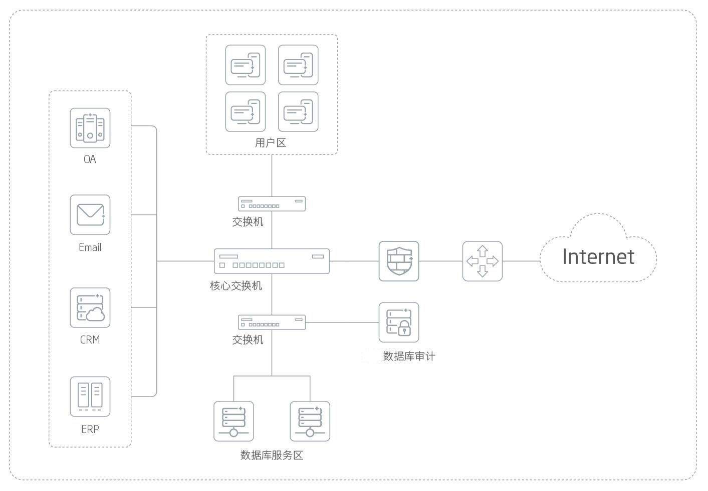

产品概述
在传统网络安全体系基础之上，数据库内部和周边SQL活动的监视及安全控制是至关重要的“下一步”建设目标。赛博特安数据库审计系统（DBA）是用户核心信息资产——数据库系统的最后一道防线，是数据安全解决方案的重要产品依托。该系统能够对链路上的SQL数据流进行采集、分析、识别、屏蔽、替换、阻断、授权、身份验证和身份识别等操作，把相关行为、相关内容进行归档存储，形成高效的监视审计机制，并对违规操作进行报警甚至拦截，同时提供全面的合规性报告。一方面，赛博特安数据库审计系统能够汇总并分析数据库SQL通信以形成审计记录，另一方面还可检测发现异常访问并进行报警。甚至在合理的策略配置和模块支持下，赛博特安DBA系统还能够对严重违规SQL 流量进行拦截阻断，防止其损害数据库。
应用价值
赛博特安数据库审计系统可按需提供全部的数据安全功能包，实现完整的数据安全解决方案，如数据库审计、数据库防火墙、数据库风险扫描、数据库透明加密、数据库脱敏、数据库状态监控、关联分析、合规报表等，能够针对数据安全流程节点提供对应的保护机制。
产品亮点
详尽的数据库审计能力
实时监控业务系统和管理员对业务数据库的所有访问，根据多种安全策略判定访问操作的风险等级，并根据风险等级采取对应的报警策略，从而实现完全独立于数据库的审计功能。系统能够有效识别数据库访问行为，完整记录并形成审计数据，最终通过合规性报告、检测警报等形式通告管理者，是合规性建设及调查取证的重要工具。
有力的违规拦截与防御
赛博特安DBA数据库审计系统支持专业的数据库防火墙扩展模块，该模块能检查将要进入数据库的SQL语句，并根据管理策略采取允许、记录、替换、阻止或者警报等处理手段。防火墙可提供完全独立的授权检查，按照IP、用户、时间、命令进行针对性的权限控制，同时还可防御数据库SQL注入、缓冲区溢出等高危行为。
全面支持数据安全分析平台
数据安全分析平台能够对多台分布式的NDBA设备提供集中分析服务。系统基于大数据技术架构，采用关联分析、行为分析、机器学习、日志还原、可视化技术等多种手段，并结合用户资产、敏感数据、组织架构等基础信息，构建数据安全态势分析平台，提供海量日志存储分析、安全态势分析、安全设备管理、业务状态展现、安全事件追溯取证、安全策略联动等功能。
应用场景
